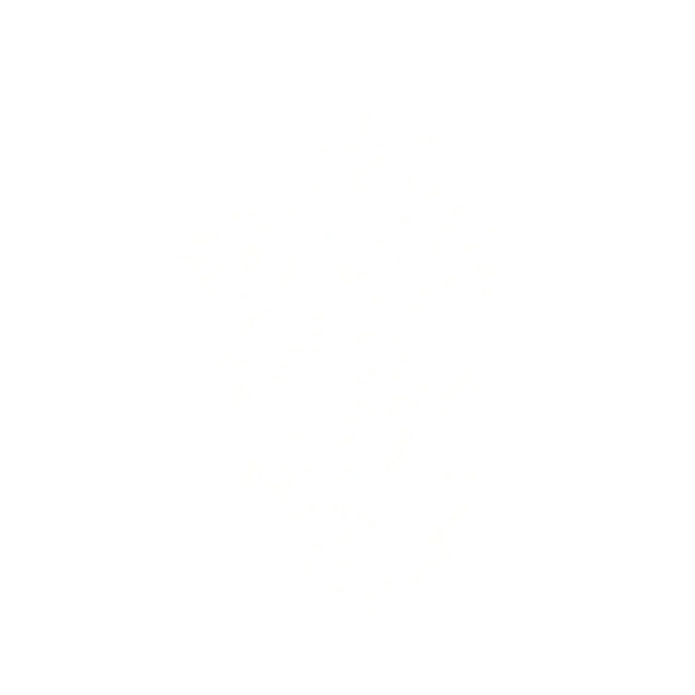
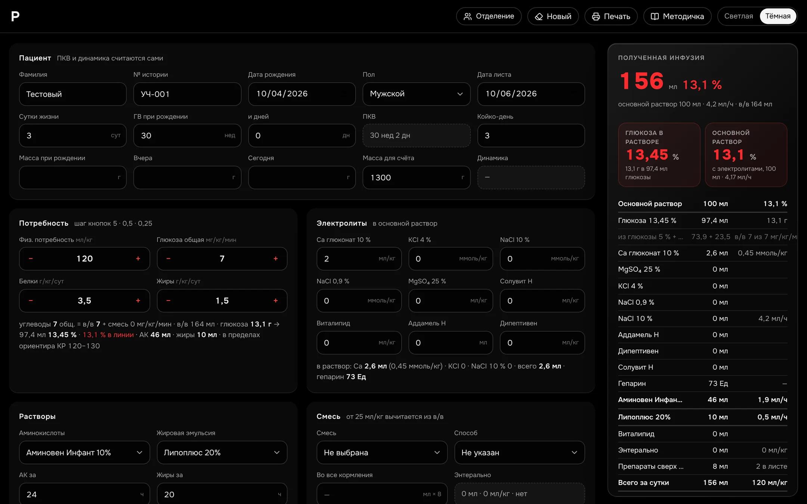

Лист назначений для ваших пациентов
Один лист назначений
Вручную
15–20минут
С POSTNEO
5–10минут
Уже работает в ОРИТН ГКБ № 67
Весь расчёт на одном экране


15–20минут
5–10минут
Уже работает в ОРИТН ГКБ № 67
